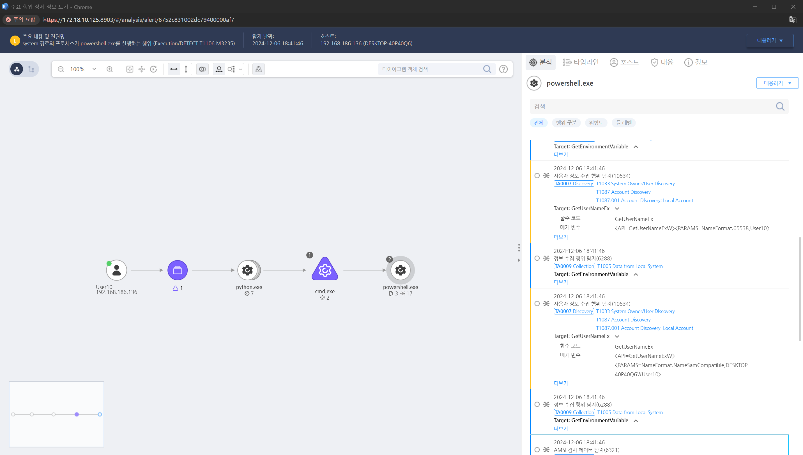

T1087.001.01 로컬 계정 정보 수집
D3FEND
MITRE ATT&CK 액션을 기준으로 대응 방안을 작성
Detection
사용자 정보 수집에 대한 powershell.exe 명령어를 탐지합니다.
Detection(EDR)

Response
- Windows 이벤트 로그 모니터링:
PowerShell 스크립트 실행 로그(Event ID 4104)를 활성화하여 계정 관련 명령어 실행을 모니터링합니다.
- SIEM 및 로그 분석:
Splunk, Microsoft Sentinel 등 SIEM 도구를 활용하여 계정 검색 명령을 탐지합니다.
- 이상 징후 탐지:
비정상적인 시간대 또는 비관리자 계정에 의한 계정 검색 시도 탐지합니다.
Mitigations
권한 최소화
- 로컬 계정에 대한 정보 접근 권한을 최소화하여 계정 정보를 수집할 수 있는 사용자를 제한합니다.
로컬 계정 비활성화
- 사용하지 않는 로컬 계정을 비활성화하고, 필요 없는 계정을 제거합니다.
로컬 계정 암호 관리
- 모든 로컬 계정의 암호를 강력하게 설정하고 주기적으로 변경합니다, LAPS(Local Administrator Password Solution) 도구를 사용하여 로컬 관리자 계정 암호를 관리합니다.
감사 정책 설정
- 계정 관련 활동을 감시하기 위해 감사 정책을 설정합니다.
WinRM 및 WMI 접근 제어
- WMI 및 WinRM(Windows Remote Management)을 통한 계정 정보 수집을 제한합니다.
PowerShell 스크립트 제한
- 악성 PowerShell 스크립트 실행을 방지하기 위해 실행 정책을 강화합니다.
AppLocker 또는 WDAC 정책 적용
- net.exe, whoami.exe, 또는 PowerShell 명령어 실행을 제어합니다.
Affected Techniques
Action 실행시 함꼐 영향을 받는 다른 Techniqes
| D3FEND |
| D3-LAM Local Account Monitoring |
| D3-UAP User Account Permissions |
| D3-APA Access Policy Administration |